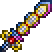
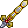

Истинный Экскалибур
Истинный Экскалибур (True Excalibur) — меч, добавленный в обновлении 1.2, который можно создать только в пост-мех хардмоде. Является усовершенствованной версией Экскалибура.
При атаке выпускает розовый меч в направлении атаки, который наносит урон, равный урону самого меча и пробивает 1 цель. Время перезарядки снаряда составляет 1 секунду. В мобильной версии время перезарядки снаряда составляет 0,5 секунд. В обновлении 1.4.1 был изменён рецепт (вместо сломанного меча героя стали использоваться хлорофитовые слитки).
Истинный Экскалибур

Характеристики
Тип Оружие Меч
Урон 72

Скорость 18 (Очень быстрая)
Атак/сек 2
Крит. шанс 4%
Отбрасывание 6.5 (Сильное)
Редкость Желтая
Продажа 14

Лучшая модификация Легендарный
Кол-во исследований 1 исследование
Рецепт
Рабочие места:

Мифриловая наковальня

Орихалковая наковальня
Ингридиент(ы):

Экскалибур
Хлорофитовый слиток 24шт